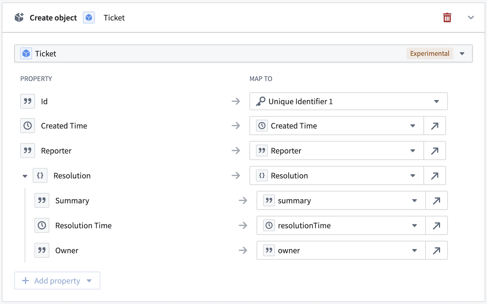
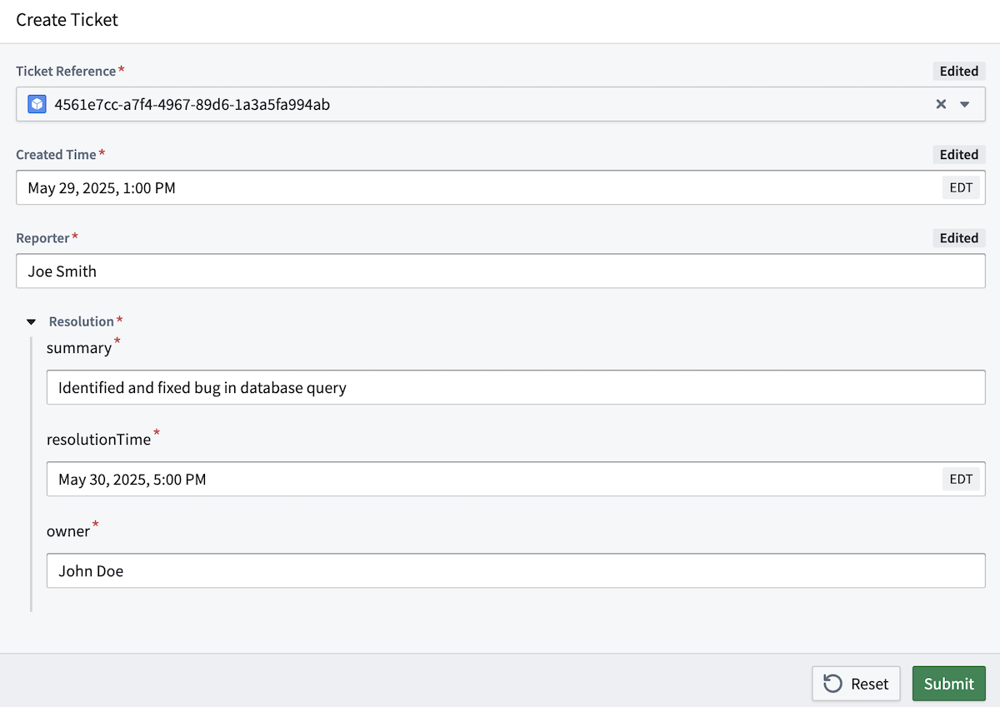
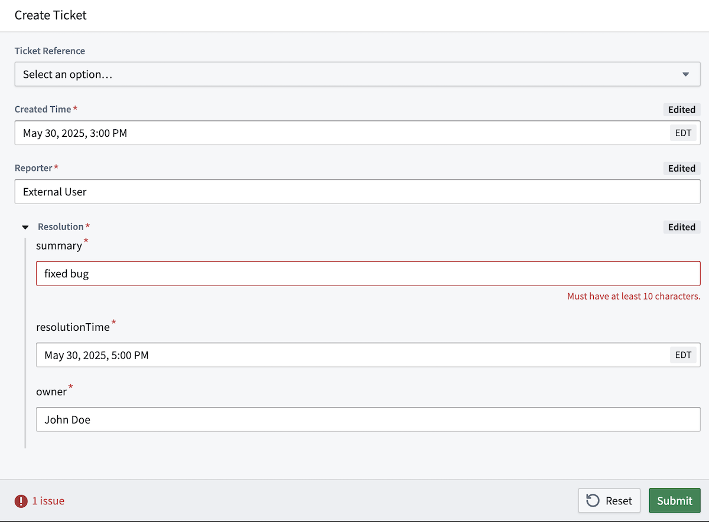

Struct property values can be created and modified with actions, through values supplied in a struct parameter.
A struct parameter is a parameter of base type STRUCT, where the type contains nested parameter fields that have their own individual names and base types. A struct parameter can be only be used to supply values for a struct property. The supported base types for struct parameter fields are BOOLEAN, DATE, DOUBLE, GEOPOINT, INTEGER, LONG, STRING, and TIMESTAMP.
Below, we have a Resolution struct parameter for a Create Ticket action. The nested fields of summary, resolutionTime, and owner compile information on how the ticket was resolved into a single parameter.
Using actions with struct parameters, you can create and modify object types with struct properties. The values for the struct property are submitted in a struct parameter mapped to the property; each individual field of the struct property is mapped to a specific field of a struct parameter. In the example below, each field of the Resolution struct parameter is mapped to its corresponding field in the Resolution struct property of the Ticket object type.

A mapping between a struct property and a struct parameter must be complete, with each field of the struct property mapped to a field in the struct parameter. The base type of the struct parameter field must match the base type of a mapped struct property field. If any breaking changes are to be made to the struct property type (for example, if a new field is added, a field is deleted, or a field's base type is changed), then the related action types must also be modified to incorporate those changes.
A struct parameter can be populated through action forms similarly to any other parameter type. However, struct parameter fields are rendered as a group in the form instead of individually.
Default values are defined individually for struct parameter fields. Each struct parameter field is mapped to fields of a specified object type's struct property. A default value must be defined for all fields in the struct parameter and must be mapped to fields of the same object type struct property. Only struct property fields can act as default values for struct parameter fields. The object type whose struct property fields will act as default values is specified in the ObjectReference parameter.
An instance of an object of the type specified in the ObjectReference parameter is supplied when submitting the action, and that object's struct property field values will automatically fill in the values of the corresponding struct parameter fields.

Constraints can be configured individually for struct parameter fields, as with regular parameters. For example, a string length constraint can be defined on struct parameter fields of string types to only allow string values that are between 10 and 500 characters long. This would mean that the summary field of the Resolution struct parameter must be at least 10 characters long, but no longer than 500 characters.
A struct parameter value is only valid if all fields meet the defined constraint. Users can only submit a struct parameter value if each field value satisfies the constraints defined on them. As defined for the summary field, a value shorter than 10 characters would be invalid.

Consider the following limitations when creating or modifying struct parameters with actions: